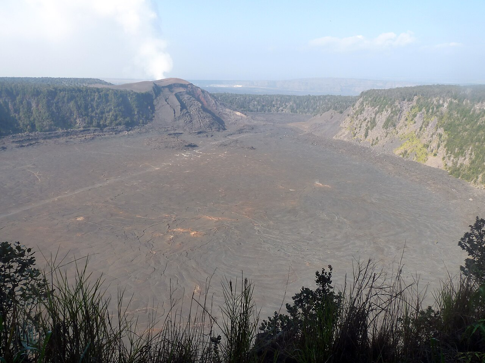

Hawaiʻi Volcanoes National Park from Hilo · 5-day family itinerary
About 45 minutes’ drive from Hilo airport to the summit of Kīlauea, then four nights near the park. Short walks through a lava tube and across a cinder field, one day down Chain of Craters Road to the coast, and a rule for a ten-year-old and a six-year-old: the eruption keeps its own schedule, so the plan holds three evening chances to look for it.

Photo: Ethan Hein, Kilauea Iki crater hike, CC BY 2.0, via Wikimedia Commons.

Checked before you commit
This illustrative route flies into Hilo (ITO) and stays four nights near the Kīlauea summit. National Park Service pages for Hawaiʻi Volcanoes, the USGS Hawaiian Volcano Observatory’s daily updates (read through its public notice feed), Hawaiʻi State Parks’ Wailuku River page and ʻImiloa’s opening hours were read on 3 November 2026. Nothing was booked.
One flight in and out of Hilo, one base near the park, and a rental car, because the NPS says there is no shuttle or public transport inside the park. Crater Rim Drive West is Day 2, Crater Rim Drive East Day 3 and Chain of Craters Road Day 4, so no day doubles back.
Walks of 1 to 1.5 miles on most days, with the 3.3-mile Kīlauea Iki loop as an option for older children. Active day pace adds an optional evening slot, used here for three short eruption-viewing checks. Each can be skipped if the eruption is paused or the night is wet.
We didn’t check flights, car hire, or hotel rates or availability. The park entrance fee is set by the NPS, and is card or digital pass only. A booking-hub link is intent only. It doesn’t hold a room, a car or a viewing spot, and nothing here can book an eruption.
Planning boundary: dates are illustrative; the worked example runs Tuesday 8 to Saturday 12 December 2026. The NPS lists December among the park’s busiest months, when lots fill early. It also lists the Kīlauea Visitor Center as closed for construction until late 2026, so this plan uses the temporary Welcome Center.
The USGS says Kīlauea’s summit eruption is episodic: fountaining episodes generally last less than 12 hours and are separated by pauses of two or more weeks, and its forecast window for the next episode has moved as new data came in. Alfred doesn’t check eruption status, air quality or road closures. Book opens a partner checkout; it doesn’t prove a booking.
Route and family-coordination brief
Party: two adults, one ten-year-old and one six-year-old. Base: four nights near the park, in Volcano Village or at Volcano House inside the park. Pace: active, a morning and an afternoon slot plus an optional evening. Budget input: Mid Range.
Getting there: the NPS says the park is about 30 miles southwest of Hilo on Highway 11, about 45 minutes, and 95 miles from Kailua-Kona, two to two and a half hours. It says Hilo airport is served by Hawaiian Airlines and Southwest, Kona also has trans-Pacific routes, rental cars are available at both airports but not in the park, and rideshare is very difficult to find.
Entry rule: the NPS lists a private vehicle pass at US$30, admitting the passholder and up to 14 passengers, and says the park doesn’t accept cash. Buy a digital pass on Recreation.gov before you go, and print it or save a screenshot: the NPS says connectivity is limited and the pass must be available to show at all times.
Eruption rule: the NPS says Kīlauea has erupted more than 50 times since December 2024, that pauses last days or weeks, and that an eruption can last a few hours. Check the USGS daily update and the park webcams before each evening. During a pause there may be only a faint glow at night, and fog or rain can hide everything.
Air and weather rule: the NPS says volcanic gas (sulfur dioxide) is a hazard for infants, children, pregnant women and people with heart or breathing problems, and to check air quality. It says the summit, at about 4,000 feet, can be rainy and chilly at any time, while the coast at the end of Chain of Craters Road is hot, dry and windy.
Left out: the Kahuku Unit, which the NPS says is 70.5 miles south of Hilo and open Thursday to Sunday only, and longer backcountry hikes. Drones aren’t allowed in the park. The Hōlei Sea Arch, once a stop at the end of the road, collapsed in late September 2026.
Day 1 — Land in Hilo, Rainbow Falls, up to the volcano
Fly into Hilo (ITO) and collect the rental car there; the NPS says there is no car hire in the park and rideshare is very difficult. Before you leave the airport, buy the park’s digital vehicle pass on Recreation.gov and save a screenshot, because the NPS says connectivity in the park is limited.
Stop at Rainbow Falls in Wailuku River State Park, off Waiānuenue Avenue in Hilo. Hawaiʻi State Parks says the 80-foot falls often show a rainbow in the morning, the park is open 7:00 am to 5:30 pm with gates locked at 6 pm, and non-residents pay US$5 each (children 3 and under free) plus US$10 per vehicle, by credit card only.
Drive about 45 minutes up Highway 11 to the Volcano area and check in. Pack the jackets where you can reach them: the NPS says the summit can be rainy and chilly at any time, and 12 to 15 degrees cooler than sea level.
Fallback: if the flight lands late, skip Rainbow Falls and drive straight up in daylight. The NPS says driving is the most dangerous activity in the park, and asks drivers to watch for nēnē, the federally protected Hawaiian goose, on roads and in parking lots.
Live-check: the USGS daily update for Kīlauea; your rental car and accommodation bookings.
Day 2 — Welcome Center, Uēkahuna and the first evening chance
Start at the temporary Welcome Center at Kilauea Military Camp, which the NPS says is open 9 am to 4:45 pm daily while the Kīlauea Visitor Center is closed for construction. Park at the ballfield lot, which the NPS lists at 100 free spaces, about 900 feet away.
Ask a ranger about today’s eruption status and air quality, then follow Crater Rim Drive West to Uēkahuna. The NPS says it is the highest point on the caldera rim, with restrooms and drinking water. It also says the Welcome Center, Kīlauea Overlook and Uēkahuna usually have more open parking during eruptions.
Stop at Kīlauea Overlook, which has vault toilets, then head back for a rest. The NPS says lots across the summit can be full by 10 am in peak months, so a quiet afternoon at the base is part of the plan, not a lost half-day.
Check the USGS daily update and the park webcams after dinner. If an episode is under way or the glow is strong, drive back to Kīlauea Overlook or Uēkahuna with headlamps, warm layers and rain jackets. The NPS says to park only in designated spots: vehicles blocking traffic lanes get towed.
Fallback: if the eruption is paused or fog is in, the NPS says there may be only a faint glow. Stay in, and keep Days 3 and 4 as the next two chances.
Live-check: USGS daily update; park webcams; air quality; the NPS current conditions page.
Day 3 — Nāhuku early, the Devastation Trail, Kīlauea Iki for older legs
Drive Crater Rim Drive East to Nāhuku (Thurston Lava Tube). The NPS says the tube is lit from 8 am to 8 pm, parking is extremely limited, and to come before 9 am to avoid crowds. Watch little heads: the NPS warns of low ceilings and standing water, and asks visitors not to touch the walls or tree roots.
Then walk the Devastation Trail. The NPS lists it as easy, paved and stroller-accessible, about 1 mile return and an hour, with some grades over 8%. Stay on the trail: it asks visitors not to climb Puʻupuaʻi.
For a ten-year-old with stamina, the NPS lists the Kīlauea Iki loop from the overlook at 3.3 miles, two to three hours, moderate to challenging, with a 400-foot descent to the crater floor. A six-year-old may be happier at the overlook with one adult. The NPS says lava fields have no shade and to carry at least two quarts of water each.
Second viewing chance: repeat last night’s checks first. If both nights so far were paused or fogged in, that is normal for an episodic eruption, not a failed trip.
Fallback: if Nāhuku parking is full, the NPS says to plan to return later; one NPS page says after 5 pm and another after 4 pm.
Live-check: USGS daily update; webcams; air quality; Nāhuku and Kīlauea Iki trail status.
Day 4 — Chain of Craters Road to the coast
Pack lunch, water and snacks before you set off. The NPS says Chain of Craters Road runs 18.8 miles to the end of the road with no food, water or fuel along the way, and limited phone service. It lists vault toilets at Maunaulu and the end of the road.
Walk to the Puʻuloa petroglyphs: the NPS lists 1.4 miles return, one to one and a half hours, moderate, with more than 23,000 petroglyphs. Stay on the boardwalk. The NPS says there is an emergency phone at the Puʻuloa trailhead.
Continue to the end of the road, where the NPS says the coast is hot, dry and windy. The Hōlei Sea Arch is no longer there: the NPS says it was last seen intact on 23 September 2026 and had collapsed by the night of 27 September. Drive back up before tired legs and dusk combine.
Third viewing chance, with the same checks. If an episode starts while you are out on the coast road, don’t rush the drive back up: the NPS says driving is the most dangerous activity in the park.
Fallback: if the summit is wet or the air quality is poor, drive Chain of Craters Road anyway; the NPS says the coastal plain at the end of the road is often hot, dry and windy, so pack sun protection as well as rain gear.
Live-check: USGS daily update; webcams; air quality; NPS current conditions for Chain of Craters Road.
Day 5 — Last look, ʻImiloa in Hilo, fly home
If the eruption has been paused all week, take a final morning look from Uēkahuna before checking out. Then drive the 45 minutes down to Hilo.
Visit ʻImiloa Astronomy Center at 600 ʻImiloa Place, on the University of Hawaiʻi at Hilo campus. ʻImiloa says it is open Tuesday to Sunday, 9 am to 4:30 pm, closed Monday, and that it has Hawaiʻi Island’s only planetarium.
Return the car and fly out of Hilo.
Fallback: if an episode starts on the last morning, decide in advance whether the family stays at the summit and drives straight to the airport. Leave enough time to return the car.
Live-check: flight status; ʻImiloa’s hours; the USGS daily update.
Planning notes
Dates are illustrative. At decision time, recheck the USGS Hawaiian Volcano Observatory’s daily update for Kīlauea, the NPS eruption viewing, current conditions and construction closure pages, air quality, the Welcome Center’s hours and your accommodation booking. A travelling profile is required, and the adults, children and ages Alfred plans for come from the travellers on that profile.
On web Lets Go, Holiday takes origin, destination, dates, a budget step and a day pace, then Plan my trip queues the itinerary. Active day pace fills a morning and an afternoon slot and adds an optional evening, with lunch and dinner. The Estimated costs bar, when it appears, is a rounded median of flight-and-hotel packages, not a quote.
While the trip is still Planning, you can keep or change the hotel and then the flights Alfred picked. If a Volcano-area stay suits your family better than one in Hilo, change the hotel at that stage. We did not test whether city search offers Hilo or Volcano, or which hotels Alfred’s choices include there.
Once the trip is ACTIVE, you can edit an item’s title, times, location and notes, so “Kīlauea Overlook after dinner; headlamps, jackets, rain shells; check USGS update and air quality first” can sit on the card. In Hey Alfred you can ask to swap two full days, and you confirm before it is applied; a day with a flight can’t be moved. Book opens a partner checkout. It doesn’t know whether the volcano is erupting.
Plan a trip
Start with your people, dates and pace, then review the editable plan before booking.
Plan a trip